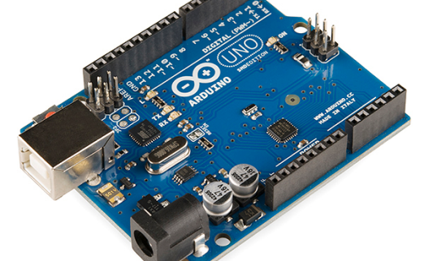
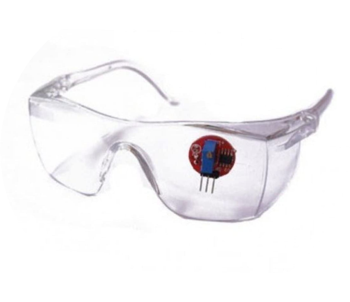

EYE BLINK DETECTOR
“Blink to Control,where your gaze sets the pace!”
To purchase our product-
To know more about arduino-
WHY WE NEED THIS DEVICE?

In 2021, drowsiness and fatigue were listed as the cause of 21.2% of all road accidents in the country. This is significantly higher than the global average of 15-20%.
To improve road safety. An eye blink detector can be used to monitor the alertness of drivers and other road users. If a driver's eyes start to close, the detector can emit an alarm or take other action to prevent an accident.
The Indian government is using eye blink detectors to monitor the alertness of truck drivers. The detectors are installed in trucks and emit an alarm if the driver's eyes start to close.
The Indian Railways is using eye blink detectors to monitor drivers for signs of fatigue. This is helping to improve safety on Indian railways.
Product overview-
An eye blink detector is a device that uses infrared light to detect when a person blinks. It is a non-invasive and relatively inexpensive device that can be used for a variety of purposes.Eye blink detectors can be used to monitor drivers for signs of drowsiness, such as increased blink rate or prolonged eye closure. This information can be used to warn the driver or to take other corrective action, such as pulling over to rest.